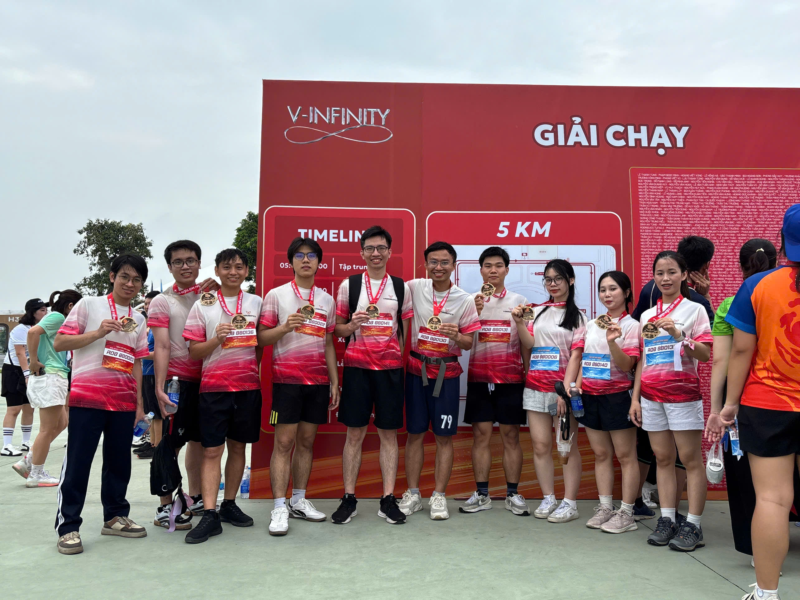
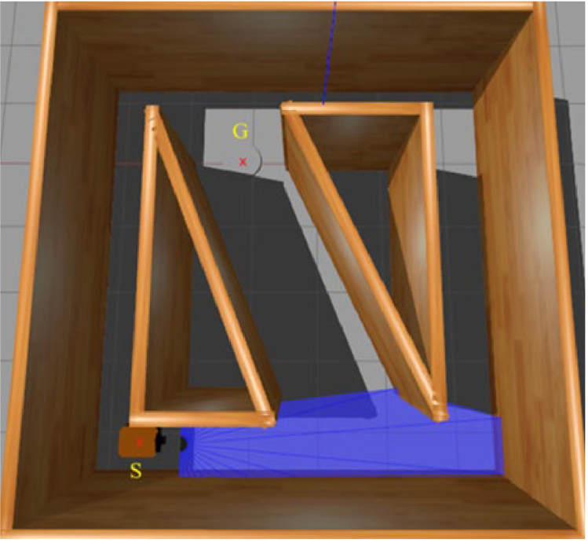

Closing the gap between
autonomous navigation research and deployed hardware.
Shipped ROS 2 robots in hospitals, restaurants, and factories. At VinRobotics, I build factory integrations and VLA manipulation systems; at HaiBotLab, I lead Embodied AI research. Co-authored a MethodsX Q2 paper on distributional RL path planning.

Most robotics demos work in ideal conditions. My job is to make them work when they don't — when the LiDAR scan is partial, the floor is reflective, the network drops packets, and the operator expects the robot to keep moving. I tune DDS QoS profiles and ROS 2 executor strategies for real-time performance, configure Cartographer SLAM for constrained hardware, and debug Nav2 failure modes that never appear in simulation.
At ByteHome Robotics, I led the full cycle from prototype to commercialized product — hardware integration, software stack, and the rarely-mentioned last mile: writing operator handbooks for independent fleet operation without ongoing engineering support.
At HaiBotLab I'm focused on the harder problem — moving beyond scripted navigation toward robots that understand unstructured 3D environments. We work with depth images, point cloud pipelines, and Micro-ROS on ESP32 running RTOS for low-latency sensor communication.

Looking for roles where the robots actually ship — not just simulate. Particularly interested in teams working on autonomous mobile robots, Embodied AI, or edge-compute robotics stacks where the distance between a ROS 2 node and a physical actuator is short.
Research collaborations welcome: sim-to-real transfer, distributional RL, or perception for navigation. If you're training operators on ROS 2 and need someone who's done it before — that too.
Based in Hanoi, Vietnam.
Open to international roles — remote-first or relocation.